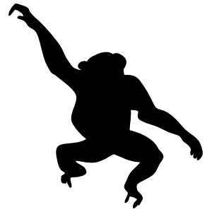
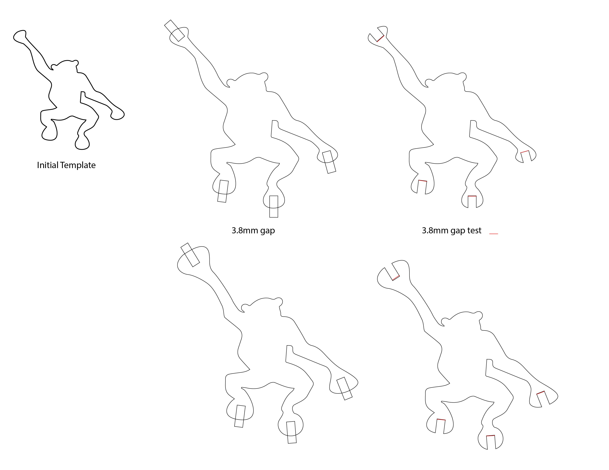
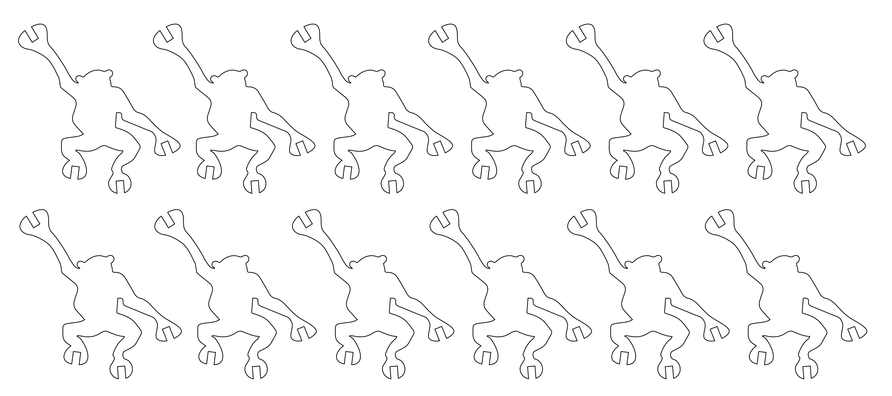

Assignment 1: Monkeys

What's more fun than a barrel of monkeys? An interconnected, laser-cut, press fit construction kit of monkeys!
I started by bringing in a .png file with the silhouette of a monkey in it to Illustrator.

I traced the outline of the image in Illustrator using ImageTrace and adjusted the outline slightly to increase the size of the hands and feet. I also created rectangles that were as wide as the width of the cardboard I would be using and overlaid them onto the outline of the monkey. I cut these notches out of the monkey and tested with a red line (with length = the width of the cardboard) to verify the sizing of everything. I realized some of the spots might be a bit too thin and unstable, so I enlarged the hands a bit to create more stability.

I duplicated the image to create 12 of them, changed the stroke width to .001pt, and then I was ready to print!
